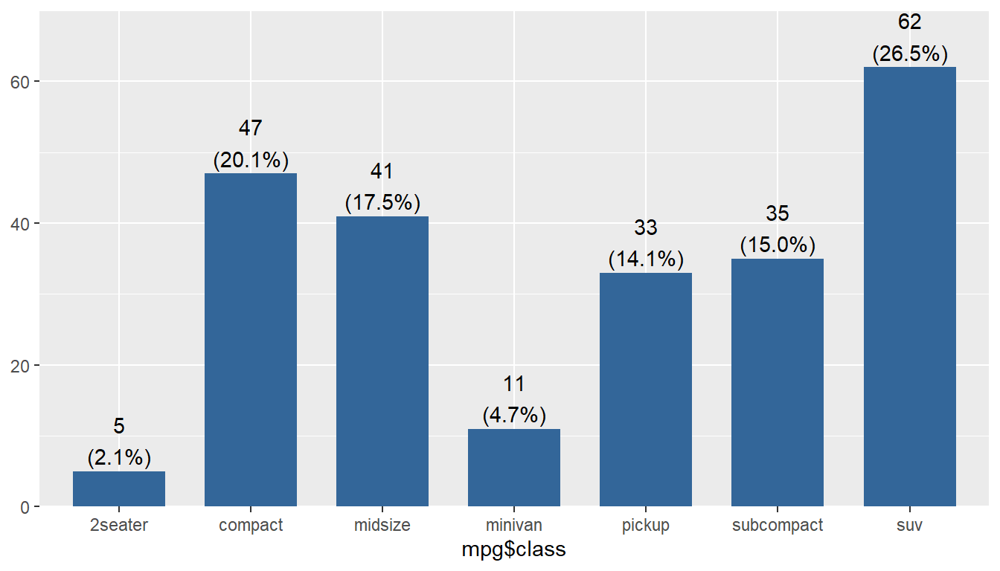
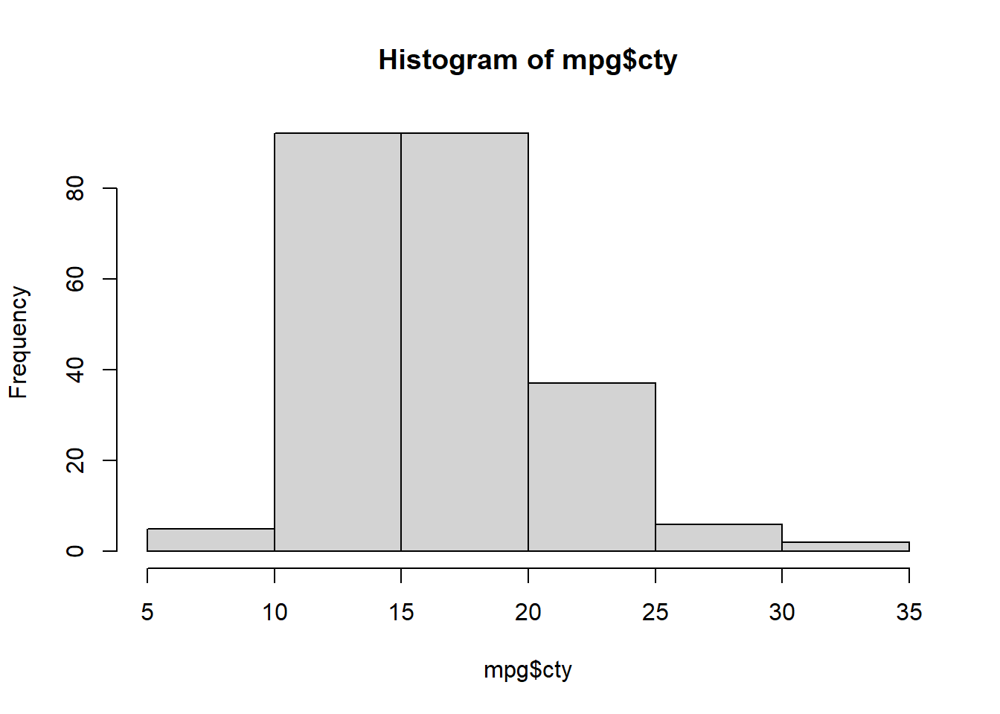
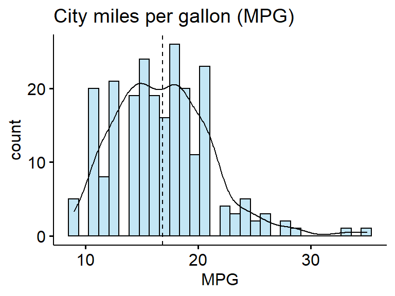

mpg <- ggplot2::mpg #this is where you would import the data
library(sjPlot); library(ggplot2);library(ggpubr)HW 04: Univariate Graphing
Let the data be beautiful
Purpose
There are a variety of conventional ways to visualize data - tables, histograms, bar graphs, etc. The purpose is always to examine the distribution of variables related to your research question. You will create a plot, follow up each graphic with a table of summary statistics (for quantitative variables) or frequency and proportion table (for categorical), and then a summary paragraph that brings it all together.
Instructions
Completely describe 2 categorical and 2 quantitative variables using all of the following:
- An explanation of what the variable is, and how it is measured.
- A table of summary statistics,
- An appropriate plot with titles and axes labels,
- A short paragraph description in full complete English sentences.
To guide your description of this distribution try to include the following information:
- What is the trend in the data? What exactly does the chart show? (Use the chart title to help you answer this question)
- Describe the location of the bulk of the data. Measures include
- Measures of center: mean/median
- IQR as Q3 and Q1 (i.e., 50% of the data lie between \(x_{1}\) and \(x_{2}\))
- N and (%) for categorical data for the largest category.
- Describe the shape (for quantitative measures only):
- Symmetry/Skewness - Is it symmetric, skewed right, or skewed left?
- Modality - Is it uniform, unimodal, or bimodal?
- Describe the spread or variability in the data
- Appropriate measures include range, standard deviation, IQR for continuous data
- For categorical data describe if distribution is spread across multiple response categories or mainly only one.
- Describe the outliers (note: there may not be any for every graph). Continuous data only.
- Are there any outliers for the variable?
- If yes, are these true outliers or false (due to data management or input error) outliers? (This could alert you to missing codes like -77 or 99 that need to be set to missing)
Submission instructions
Draft
Peer Review instructions
As a reviewer, this is what you’re checking for:
- Did they describe 2 categorical and 2 quantitative variables?
- Did they use appropriate plot types?
- Do the variables in the plot match their description?
- Do they have a sentence description that reads reasonably well?
- Did they include all the required summary numbers in their description?
Final
- Upload your final PDF to
04 Univariate Graphing/finalfolder in Google Drive. - “Submit” a note to the assignment in BBL so I can use the rubric for scoring.
Example
This example uses the mpg data set from the ggplot2 package.
text written like this are example student submission text
Basic categorical
Draft style plot, direct computer output showing/copied. Poor grammar and/or sentence structure, no attempt at explaining what the variable means, extra unnecessary or incorrect information included. Typos.
table(mpg$class)
2seater compact midsize minivan pickup subcompact suv
5 47 41 11 33 35 62 class has more suvs than compacts. 2% are 2seaters. there are 5 2seaters 47 cmpact 41 midize 11 minivans 33 pickups 35% subcompacts, 62 suv and 234 total cars.
Proficient categorical
Cleaned up plot, full English sentences, useful text formatting of variable names and levels. Explained what the variable was named and what it measured.
The
classvariable from thempgdata set is a catgorical variable that describes the type of vehicle being measured. Some levels of this categorical variable include compact, pickup and suv.
plot_frq(mpg$class)
Sub compact cars are the most frequently reported type of car, making up over one-quarter (26.5%) of the cars in this data set with n=62 cars represented. The least represented car is a compact car with n=5 (2.1%) records.
Basic quantitative
A “for your eyes only” quality plot, minimal description of characteristics, no information about the variable provided.
hist(mpg$cty)
summary(mpg$cty) Min. 1st Qu. Median Mean 3rd Qu. Max.
9.00 14.00 17.00 16.86 19.00 35.00 cty is normally distributed between 5 and 35 with mean 17.
Proficient quantitative
Overlaid a density curve on the histogram, added a dashed line at the mean. Table of summary statistics present in a nicely formatted way, digits rounded appropriately. Plot cleaned up with appropriate axis and titles.
The
ctyvariable records the miles per gallon (mpg) achieved during city driving. This is a quantititative numeric variable.
gghistogram(data=mpg, x = "cty", add = "mean", fill = "skyblue", add_density = TRUE,
xlab = "MPG", title = "City miles per gallon (MPG)")
summary(mpg$cty) Min. 1st Qu. Median Mean 3rd Qu. Max.
9.00 14.00 17.00 16.86 19.00 35.00 The MPG in the city ranges from 9 to 35, unimodal and is slightly skewed right with a mean of 16.9 close to the median of 17 and a standard deviation of 4.3mpg. The histogram indicates that there are at a few upper end potential outliers achieving a city MPG of approximately over 30 mpg.